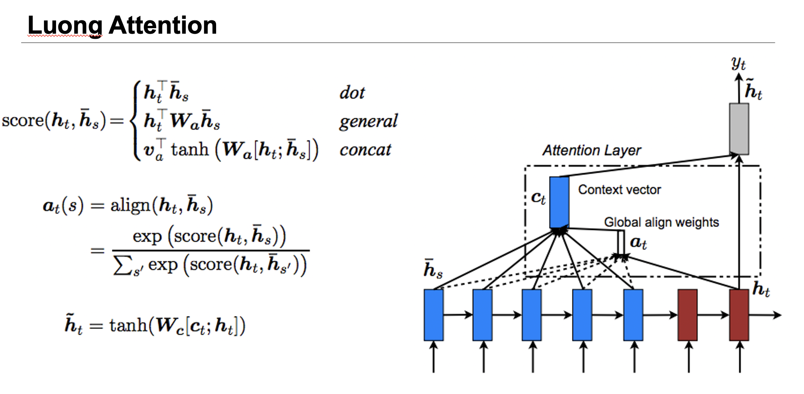

Pytorch基础
- 原位修改
函数后加下划线“_”表示原位修改:y.add_(x)。 - numpy和tensor的转化
numpy转换为tensor-》torch.from_array(a)
tensor转换为numpy-》a.numpy() - cuda向量
a.cuda()a.to("cuda")a.to(torch.device("cuda"))torch.ones_like(device=torch.device("cuda")) - 简单的双层神经网络案例
1
2
3
4
5
6
7
8
9
10
11
12
13
14
15
16
17
18
19
20
21
22
23
24
25
26
27
28
29
30
31
32import torch
import torch.nn as nn
# N is batch size; D_in is input dimension;
# H is hidden dimension; D_out is output dimension.
N, D_in, H, D_out = 64, 1000, 100, 10
x = torch.randn(N,D_in)
y = torch.randn(N,D_out)
model = nn.Sequential(
nn.Linear(D_in,H),
nn.ReLU(),
nn.Linear(H,D_out))
loss_fn = nn.MSELoss(reduction="sum")
learning_rate = 1e-4
optimizer = torch.optim.Adam(model.parameters(),lr=learning_rate)
for i in range(500):
# forward：构建模型
y_pred = model(x)
# loss
loss = loss_fn(y_pred,y)
# 默认情况下grad是叠加，zero_grad用来重置参数列表
optimizer.zero_grad()
# backward：计算梯度
loss.backward()
optimizer.step()
print(i,":",loss.item())
1 | # 注意：验证时要no_grad |
- FizzBuzz游戏简单案例
游戏规则如下：从1开始往上数数，当遇到3的倍数的时候，说fizz，当遇到5的倍数，说buzz，当遇到15的倍数，就说fizzbuzz，其他情况下则正常数数。
Pytorch模型的建立
模型的建立包括几个步骤：
- 处理数据
- 搭建模型
- forward pass
- optimizer
- backward pass
词向量和语言模型
词向量
github
资料地址 链接: https://pan.baidu.com/s/1QEFLWKRkMh-wh2nE5kD4Xw 提取码: x8iw
分布式表示：用一个词附近的其他词来表示该词。
Word2Vec：Skip-Gram
DataLoader
实现Dataloader
一个dataloader需要以下内容：
- 把所有text编码成数字，然后用subsampling预处理这些文字。
- 保存vocabulary，单词count，normalized word frequency
- 每个iteration sample一个中心词
- 根据当前的中心词返回context单词
- 根据中心词sample一些negative单词
- 返回单词的counts
这里有一个好的tutorial介绍如何使用PyTorch dataloader. 为了使用dataloader，我们需要定义以下两个function:
len function需要返回整个数据集中有多少个item
getitem 根据给定的index返回一个item
有了dataloader之后，我们可以轻松随机打乱整个数据集，拿到一个batch的数据等等。
1 | class WordEmbeddingDataset(tud.Dataset): |
model
1 | class EmbeddingModel(nn.Module): |
training
1 | model = EmbeddingModel(VOCAB_SIZE,EMBEDDING_SIZE) |
评估
1 | def evaluate(filename, embedding_weights): |
语言模型
常见的语言模型
RNN（Recurrent neural network）
Long short-term memory(LSTM)：
几个门来控制输入输出：
忘记门、输入门、更新门、输出门
原始的LSTM：
优化的LSTM（Pytorch中的LSTM）：
训练时训练CrossEntropy
Gated Recurrent unit
模型建立
这些循环神经网络都可能出现梯度爆炸的问题。因此最好做一个gradient clipping
github
- 文本处理
1
2
3
4
5
6
7
8
9
10
11TEXT = torchtext.data.Field(lower=True)
train, val, test = torchtext.datasets.LanguageModelingDataset.splits(path=".",
train="word2vec/text8.train.txt", validation="word2vec/text8.dev.txt", test="word2vec/text8.test.txt", text_field=TEXT)
TEXT.build_vocab(train, max_size=MAX_VOCAB_SIZE)
print("vocabulary size: {}".format(len(TEXT.vocab)))
VOCAB_SIZE = len(TEXT.vocab)
TEXT.vocab.itos # index to string. type:list 包含两个特殊字符<unk> <pad>
TEXT.vocab.stoi # string to index. type:dict 包含两个特殊字符<unk> <pad>
train_iter, val_iter, test_iter = torchtext.data.BPTTIterator.splits(
(train, val, test), batch_size=BATCH_SIZE, device=-1, bptt_len=32, repeat=False, shuffle=True) - 模型保存
1
2
3
4
5
6
7
8
9val_loss = evaluate(model, val_iter)
if len(val_losses) == 0 or val_loss < min(val_losses):
print("best model, val loss: ", val_loss)
torch.save(model.state_dict(), "lm-best.th")
else:
scheduler.step()
optimizer = torch.optim.Adam(model.parameters(), lr=learning_rate)
val_losses.append(val_loss) # scheduler = torch.optim.lr_scheduler.ExponentialLR(optimizer, 0.5) - 模型加载
1
2
3
4best_model = RNNModel("LSTM", VOCAB_SIZE, EMBEDDING_SIZE, EMBEDDING_SIZE, 2, dropout=0.5)
if USE_CUDA:
best_model = best_model.cuda()
best_model.load_state_dict(torch.load("lm-best.th"))
文本分类模型
logits : 任何数字
sigmoid处理后： probability
BCEWithLogitsLoss() binary cross entropy: 二分类问题
文本分类模型中，dropout很重要，特别是数据量比较少的时候。（可以dropout，或把部分单词的word调成<unk>）
WordAVG 很强。
卷积网络
local feature detect
Batchnormalization

常见的卷积网络
迁移学习
我们常用以下两种方法做迁移学习。
- fine tuning: 从一个预训练模型开始，我们改变一些模型的架构，然后继续训练整个模型的参数。
- feature extraction: 我们不再改变预训练模型的参数，而是只更新我们改变过的部分模型参数。我们之所以叫它feature extraction是因为我们把预训练的CNN模型当做一个特征提取模型，利用提取出来的特征做来完成我们的训练任务。
通过requires_grad = False 来冻结层
以下是构建和训练迁移学习模型的基本步骤：
- 初始化预训练模型
- 把最后一层的输出层改变成我们想要分的类别总数
- 定义一个optimizer来更新参数
- 模型训练
图片风格迁移和GAN
风格迁移
content loss
style
Gram Matrix可以被拿来表示两张图片的texture相似度
style loss
GAN(Generative Adversarial Networks)
Generator: 生成器，目标是让生成的数据接近真实数据
Discriminator: 判别器，目标是能够鉴别真实数据和生成的假数据
论文：style transfer from non-parallel text by cross-alignment
DCGAN
使用deconv层作为图片生成器
Deconvolutional Layer https://datascience.stackexchange.com/questions/6107/what-are-deconvolutional-layers
介绍deconv
https://arxiv.org/pdf/1603.07285.pdf
Seq2Seq和Attention


大规模预训练语言模型
https://zhuanlan.zhihu.com/p/46652512
BERT、ELMO、OpenAI GPT
ELMO
一个预训练两层双向LSTM语言模型：-》得到的是词向量->用来替代embedding层，通常能提高很多
https://www.aclweb.org/anthology/N18-1202
https://github.com/allenai/allennlp
AllenNLP
一个很好的构建NLP模型的package，基于PyTorch
AllenAI在2018 EMNLP上的一个tutorial
https://github.com/allenai/writing-code-for-nlp-research-emnlp2018/blob/master/writing_code_for_nlp_research.pdf
elmo的训练代码：bilm-tf
elmo使用tensorflow训练再导出到pytorch中
BERT
不是一个语言模型，目标是预测masked word